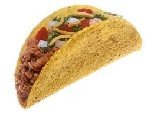

High Protein Low Calorie Taco

My favorite comfort food has to be tacos. But at times I feel
a bit guilty munching on my beloved comfort food. That's why
I just had to make a variant of this amazing dish that's both
tasty and healthier than a traditional taco.
Ingredients:
- Water
- 1lb 99%/1% Ground Turkey
- Old El Paso Carb Advantage Taco Shells
- Taco Bell Reduced Sodium Seasoning Mix
- Kraft No Fat Shredded Cheddar Cheese
- Daisy No Fat Sour Cream
Instructions:
- Set desired burner to "medium-high." Grab
designated pan and brown ground turkey.
- Change burner heat from "medium-high" to "medium-low.
- While you do this step, preheat oven to 300°F.
- Add 3/4 cup of water to pan.
- Add Taco Bell Seasoning Mix and stir.
- Grab lid and cover pan for 10 minutes, stirring periodically.
- Once your oven is preheated, grab a baking pan and put desired
amount of taco shells on pan. Put it in the oven for about 5 minutes.
- Grab your desired condiments and fixings; in this recipe, I opted for
"Kraft No Fat Shredded Cheese" and "Daisy No Fat Sour Cream."
- Once completed, take your pan off the burner.
- Take taco shells out of oven, let them sit for a minute or two to cool.
- Grab a spatula. Scoop a serving of your finished taco meat in a taco shell
and add the fixings listed in the "Ingredients" portion of this page.
- Last but most important step: enjoy!
Home